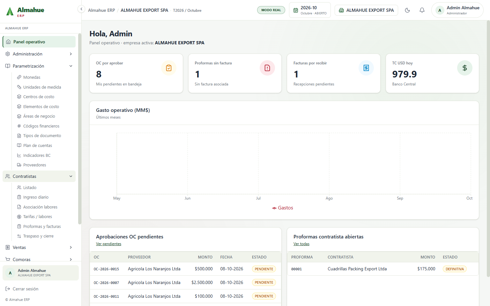
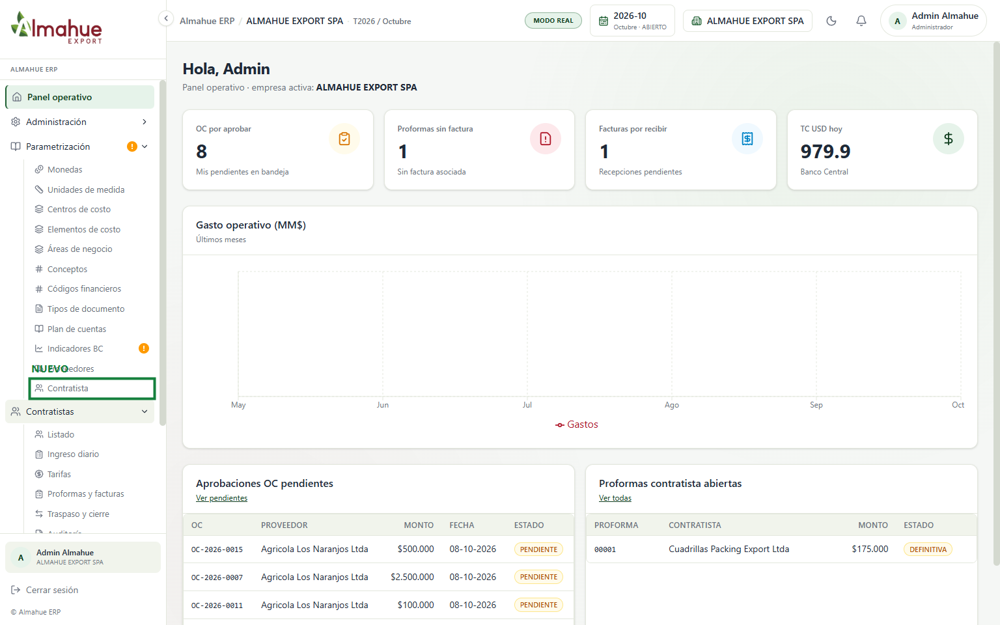
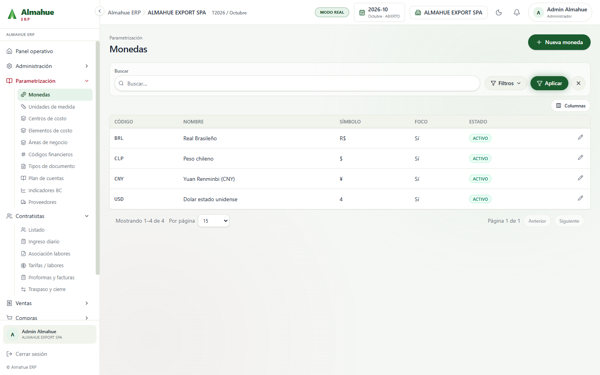
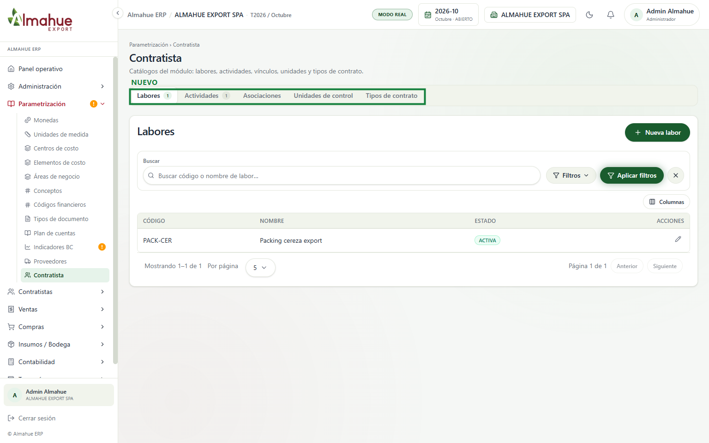
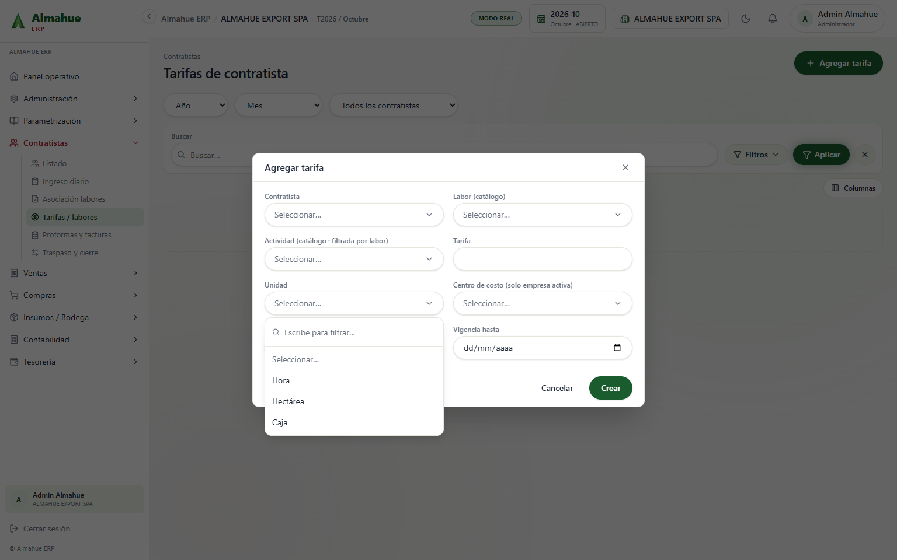
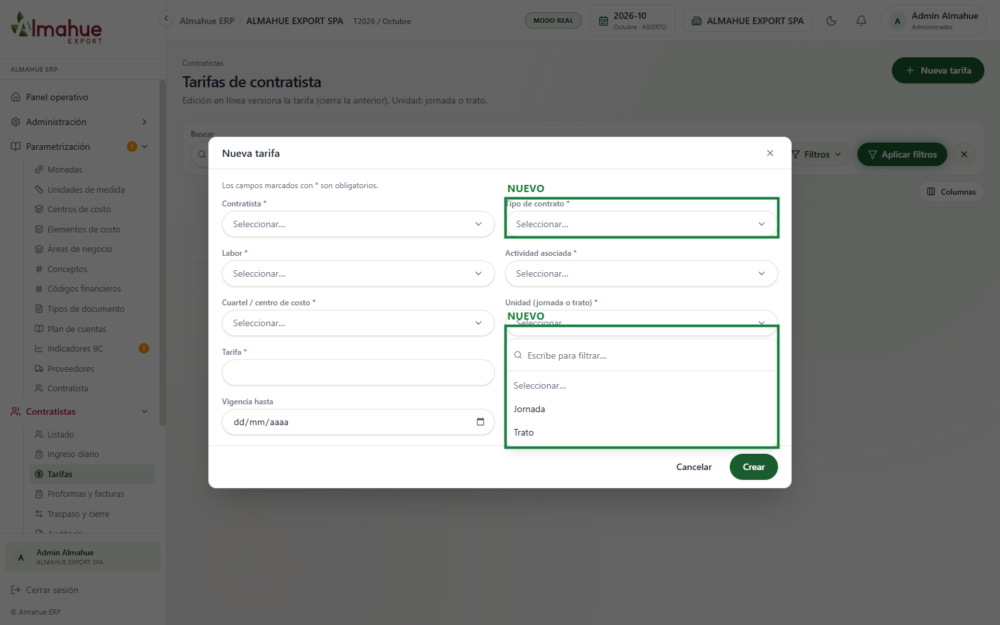
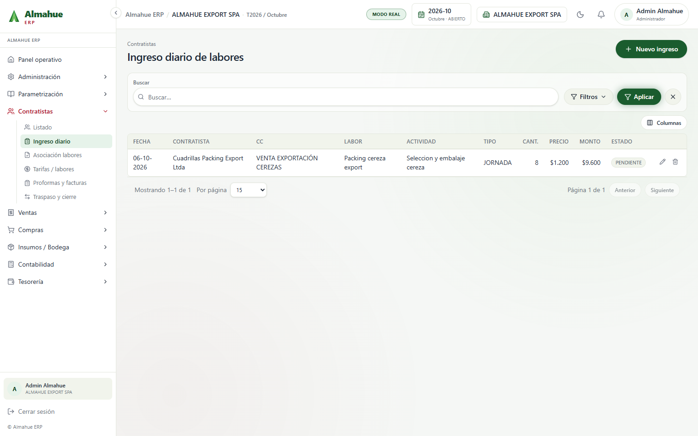
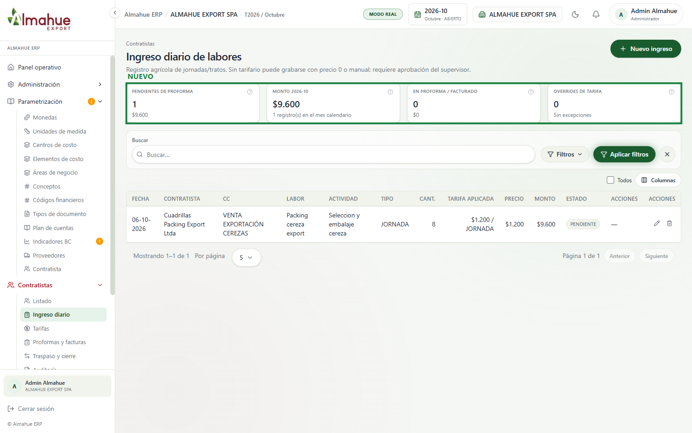
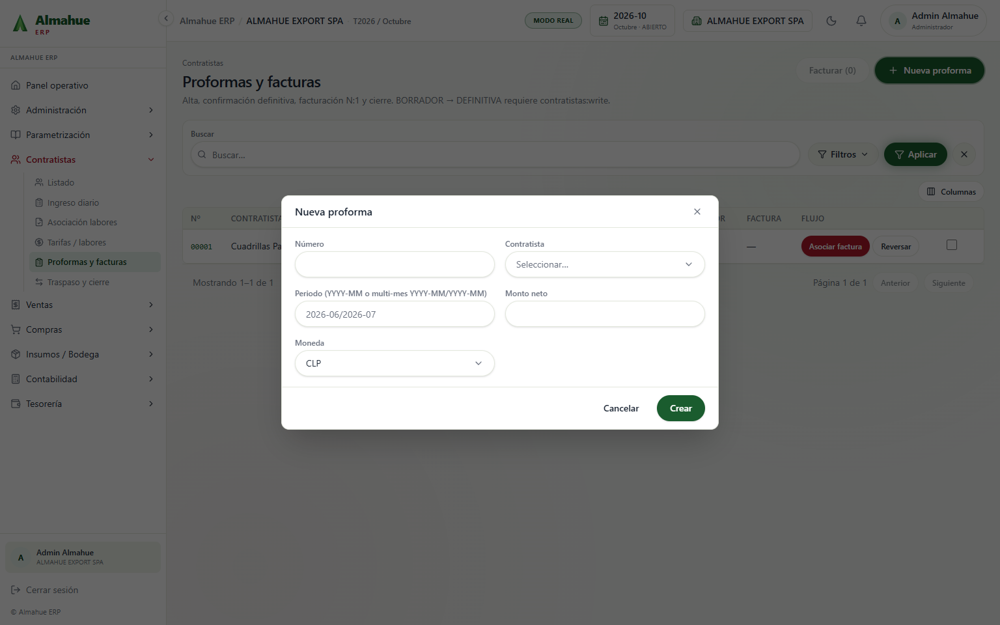
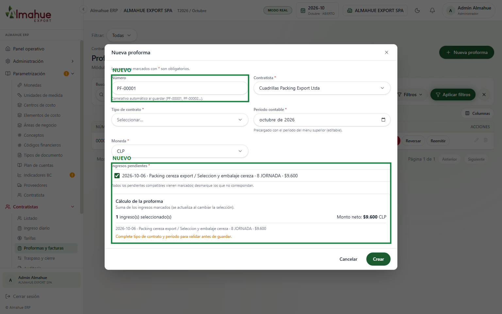

izquierda / derecha: antes y después. + y - : zoom. Esc cierra
ALMAHUE EXPORT SPA, modo real, periodo 2026-10. Los commits de Diego Madrid del 22 y 24 de septiembre ya están en el front local. El recuadro verde y la etiqueta NUEVO están solo en la captura, no en el sistema. Un clic abre la imagen. La rueda o las teclas + y - hacen zoom. Izquierda y derecha cambian entre el antes y el después. Esc cierra. Para mostrarlo, sigue el recorrido. La demo del 23/09 está en avances del 23/09.


Parametrización gana el ítem Contratista. En Contratistas, Asociación labores sale del menú (esa ruta abre Proformas) y Tarifas / labores pasa a llamarse Tarifas. Auditoría queda debajo de Traspaso y cierre, solo con el permiso contratistas:audit; en esta ventana queda junto al usuario del pie. En el listado, el alta ya no pide una especialidad fija (cosecha, poda, embalaje): el catálogo pasó a Parametrización. No se abrió Auditoría ni se guardó nada.


La pantalla no existía. La izquierda es Parametrización como estaba, abierta en Monedas, sin el ítem. La derecha es el catálogo nuevo: Labores, Actividades, Asociaciones, Unidades de control y Tipos de contrato. PACK-CER ya estaba cargado. No se apretó Nueva labor.


El alta pide tipo de contrato. La unidad deja de ser hora, hectárea o caja y pasa a jornada o trato; el combo está abierto. No se apretó Crear. En esta empresa la grilla del después está vacía: no se creó una tarifa para la foto.


Aparecen cuatro tarjetas: pendientes de proforma, monto del mes, en proforma o facturado, y overrides de tarifa. El ingreso del 06-10 de Cuadrillas Packing Export Ltda sigue en 8 jornada, $1.200 y $9.600. La columna Tarifa aplicada muestra la tarifa de esa combinación. No se apretó Nuevo ingreso.


El número queda PF-00001 y se asigna al guardar. Se eligió Cuadrillas Packing Export Ltda: el ingreso pendiente del 06-10 viene marcado y el neto ($9.600) sale de esa suma. Antes el monto se digitaba y el periodo se escribía a mano. El aviso naranja pide tipo de contrato antes de guardar; no se completó. No se apretó Crear. Facturar, que puede asociar un registro o generar una OC, no se abrió.